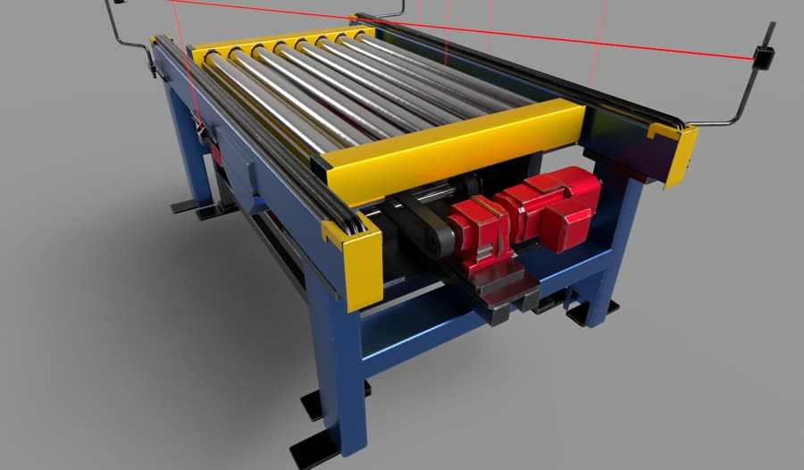
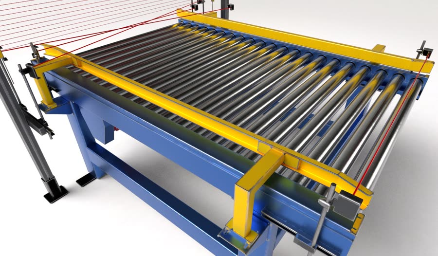
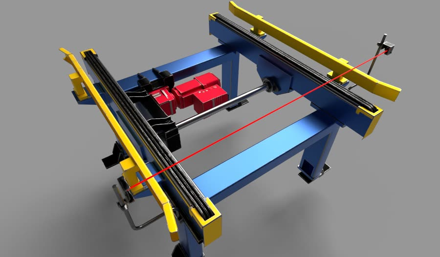
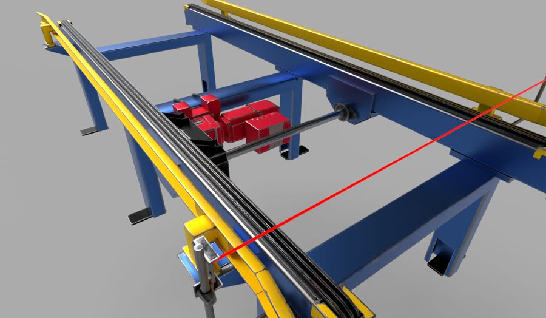
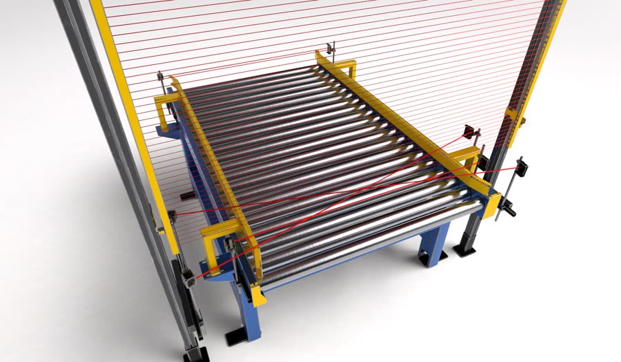
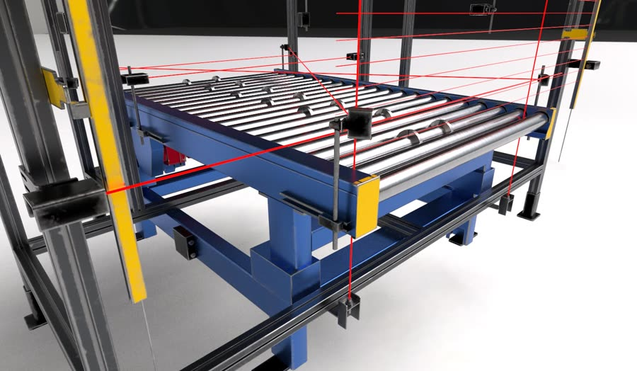
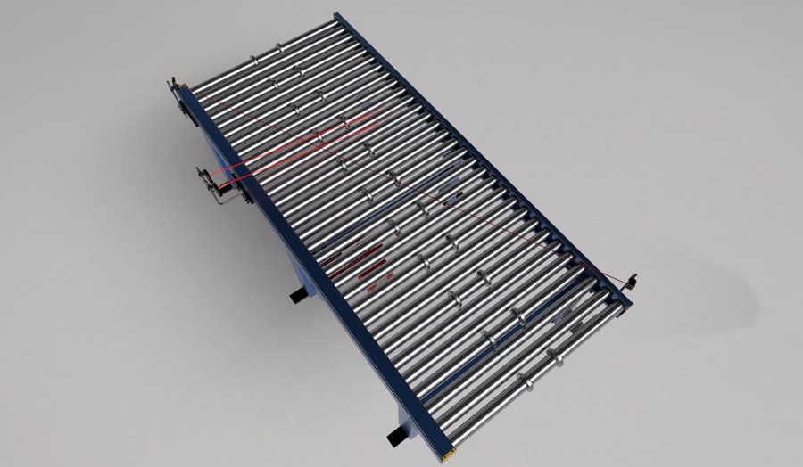
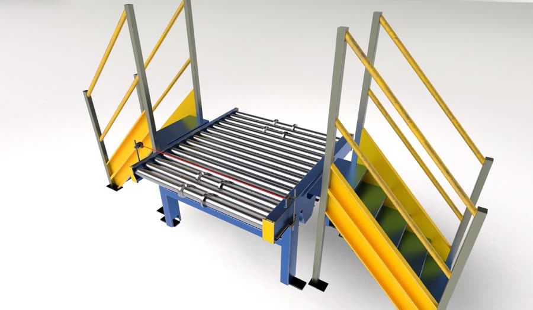
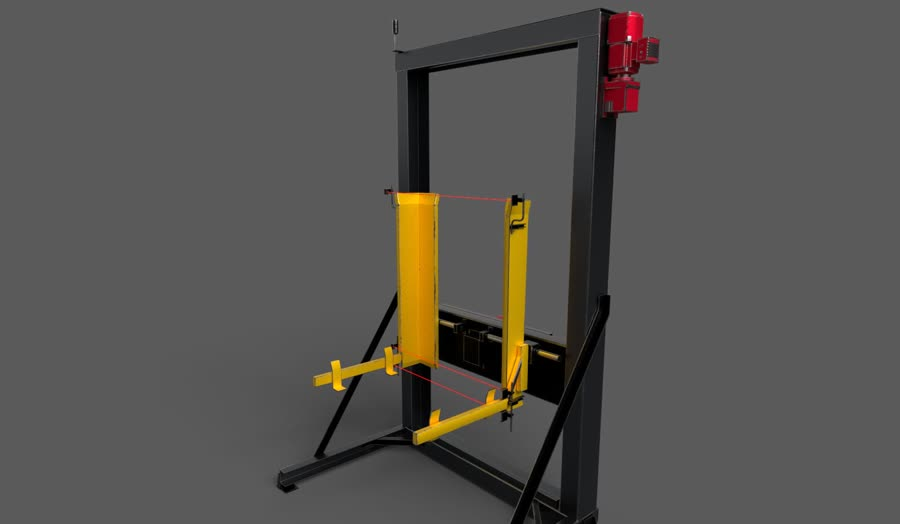

Digital Twin Asset Creation
CAD can’t be simulated. So I built the pipeline that makes it.
Thirteen stages, four tools, one standard — a documented workflow that takes vendor CAD from the mechanical team to a physics-ready asset in Isaac Sim, and lets a new designer run it in a day instead of a week.
01 / 06 The problem
CAD is built to be manufactured, not simulated
The starting condition
Vendor CAD arrives with every fastener and weld nut modelled, and none of what a simulator needs — no UVs, no collision, no mass, no usable hierarchy. Millions of triangles that will never run at rate. Every project started here.
- Arrives as
- JT · STEP · native
- Raw density
- 8–40M tri per module
- Missing
- UVs, collision, physics, semantics
02 / 06 The system
Thirteen stages, each with a defined input and output
The pipeline
I broke the work into thirteen stages, each with an owner and acceptance criteria. The output of one is the input of the next, and a stage that fails sends the asset back rather than forward — which is why nothing reaches a scene half-built.

- Stages
- 13, input and output defined
- Tools
- Isaac Sim, Blender, Painter, Nucleus
- Tracked in
- One master sheet of unique assets
03 / 06 Decisions
The calls that stopped the rework
Where the judgement sits
A 50 mm cleanup threshold with two inverse scripts, because deleting ten thousand objects freezes Blender for an hour. Rebuild rather than decimate, because CAD topology can’t be textured. Both came from hitting the wall first.


- Threshold
- 50 mm bounding-box diagonal
- Reduction
- 10–100×, silhouette held
- Collision
- Primitives, never the render mesh
04 / 06 Standard
One material standard, one server, one naming rule
Why the assets are reusable
Every asset exports the same four maps into the same shader slots, lands on Nucleus under the same structure, and is referenced as a payload. Update the source once and every scene using it updates.


- Maps
- _BaseColor · _Normal · _ORM · _Emissive
- Shader
- OmniPBR, one bind procedure
- Storage
- Nucleus, payload-referenced
05 / 06 Sign-off
Sim-ready is a measurement, not an opinion
Quality gates
An asset ships when transforms are zeroed, collision is assigned and it opens clean. A scene ships when it matches the DWG within ±10 mm and opens in under thirty seconds. Nothing passes on impression.


- Per asset
- 8 checks before handover
- Placement
- ±10 mm against the DWG
- Scene open
- Under 30 seconds
06 / 06 Outcome
The real deliverable was the document
What it changed
The pipeline ships as a controlled SOP — scripts, checklists, a new-joiner path. That is what turned a process living in one head into something a team of four runs, and a new designer picks up in a day.


- Document
- SOP v1.0, 30 pages, versioned
- Team
- 4 designers
- Onboarding
- 1 day, previously a week
Never skip a stage. Each one exists because we hit a bug that made us add it.— Digital Twin Design Pipeline, v1.0